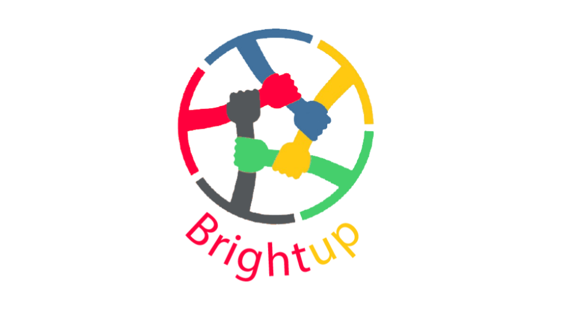
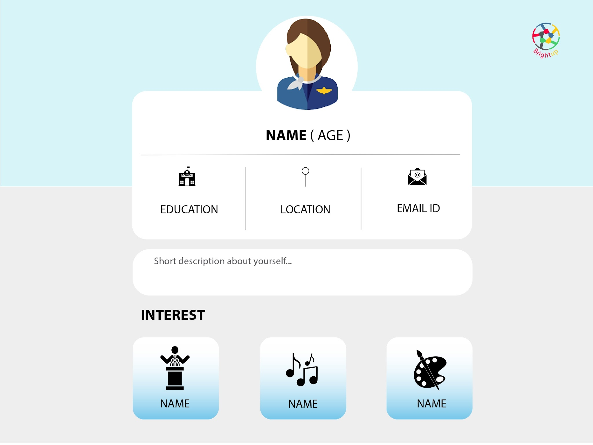
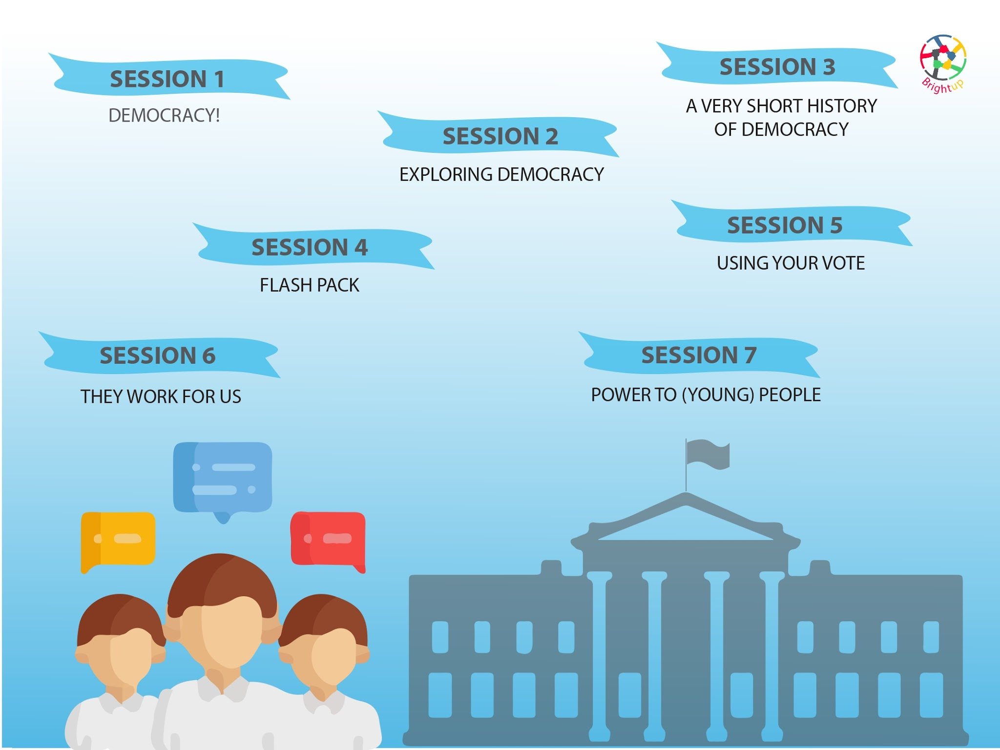
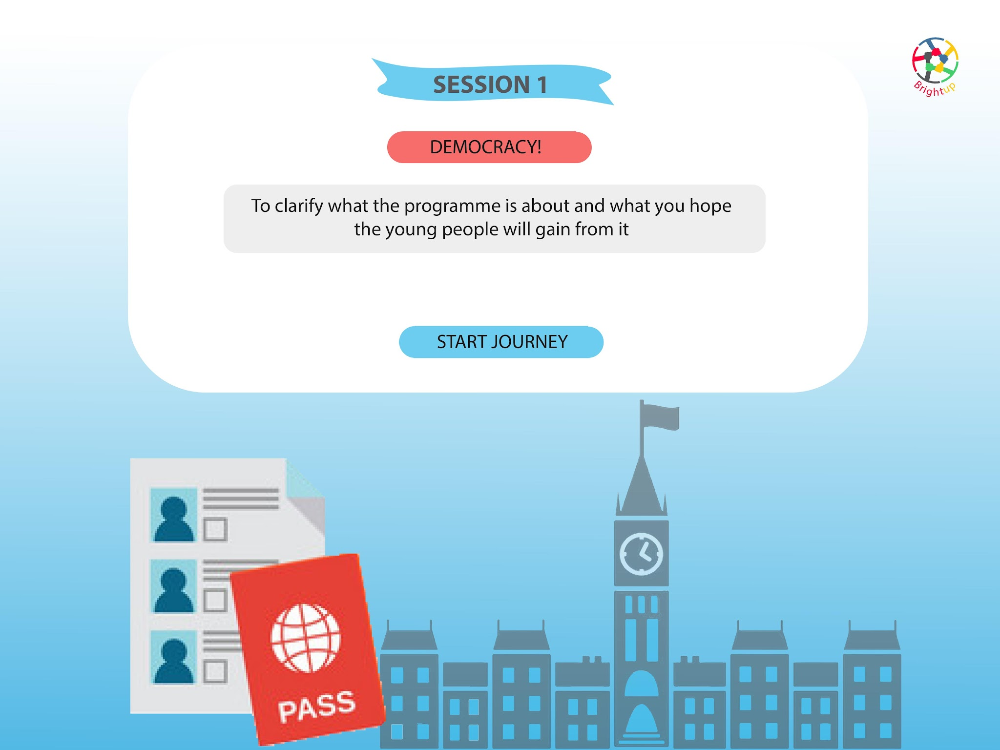
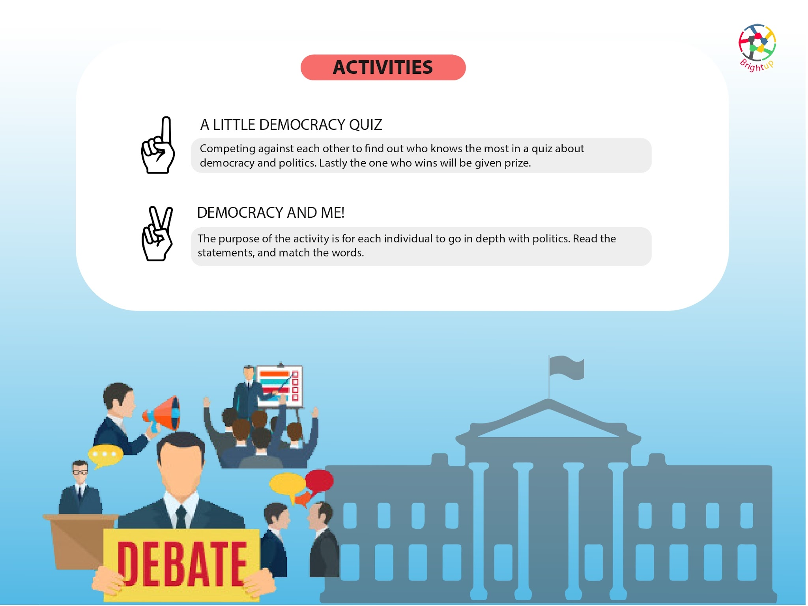
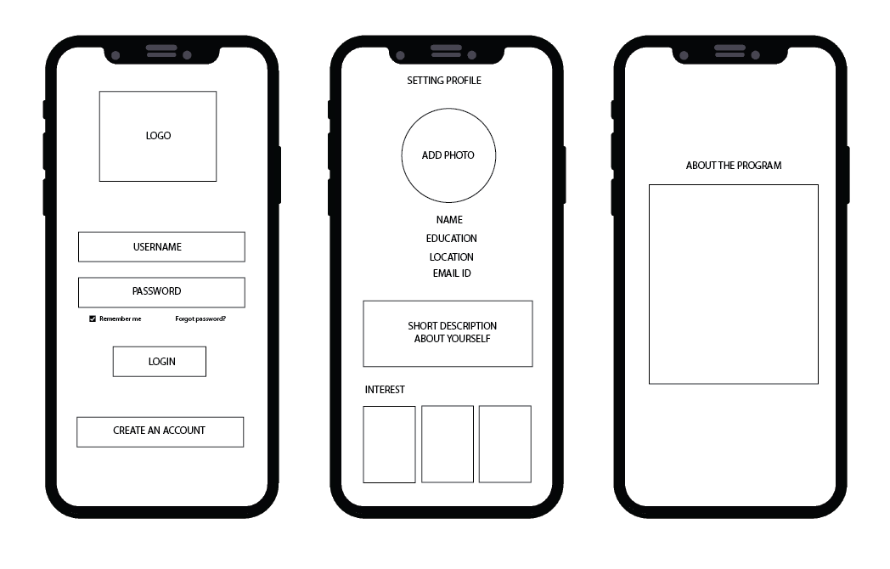
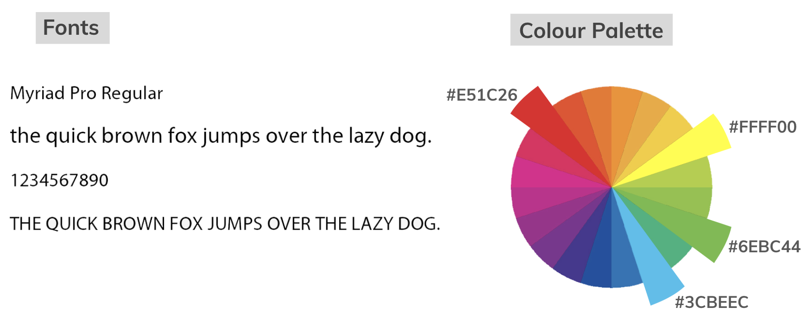

Year olds report low understanding of politics.
Civic education · Gamification

Make politics easier to understand.
BrightUP is an educational digital tool for schools that uses technology and gamification to help young people build confidence around politics, voting and democratic participation.
Express
Engage
Empower
The brief
Increase the quantity and quality of citizen participation.
Design a digital tool that harnesses and increases participation in democratic processes. Investigate barriers to voting and decision making, identify a target group, and explore their needs.
The proposal
Start before disengagement becomes habit.
BrightUP is designed for schools and responds to the growing role of technology and gamification in young people's lives.
Bringing civic learning into the curriculum gives younger people a space to understand political systems, form opinions and practise participation before they are expected to navigate democracy alone.
Of young people have trust in ministers; 17% trust politicians.
Decrease in young people on the electoral register: 45% in 2015, falling to 25% in 2018.
Design response
Turn civic participation into something young people can practise.
Engage
Use familiar digital channels and social media behaviours to encourage open discussion.
Debate
Bring political discussion into schools, colleges and universities through events and talks.
Educate
Provide approachable online resources where young people can learn at their own pace.
Activate
Connect learning to civic associations, interest groups, activism and other forms of participation.
Interface exploration
A civic product that feels approachable, not institutional.
The visual language uses clear hierarchy, friendly colour and familiar mobile patterns to make political learning feel less intimidating.




Application development
Structure first. Personality second.
The interface moved from wireframes into a more expressive visual system while keeping the learning journey easy to understand.

Wireframes
Define the journey
Establish the information structure and interaction flow before applying visual styling.

Visual Design
Make civic learning feel inviting
Use colour, hierarchy and gamified cues to make the experience feel contemporary and encouraging.